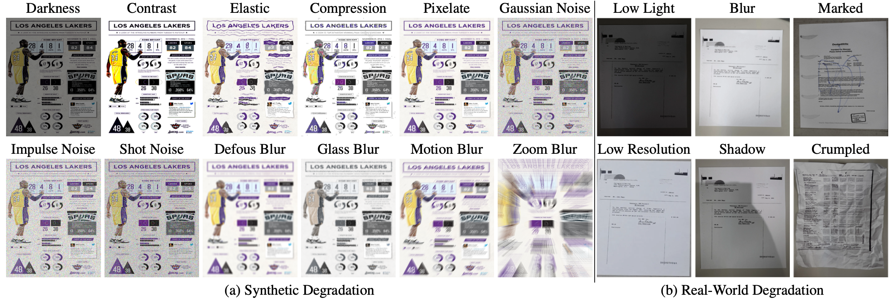
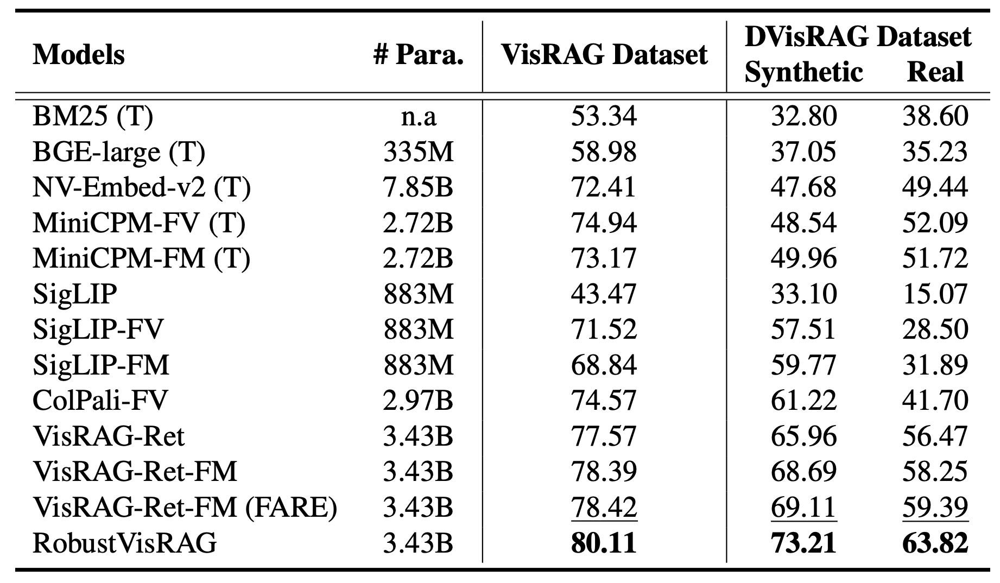
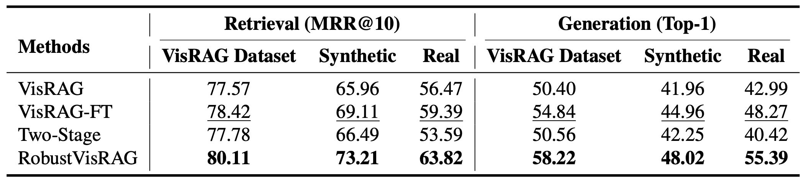
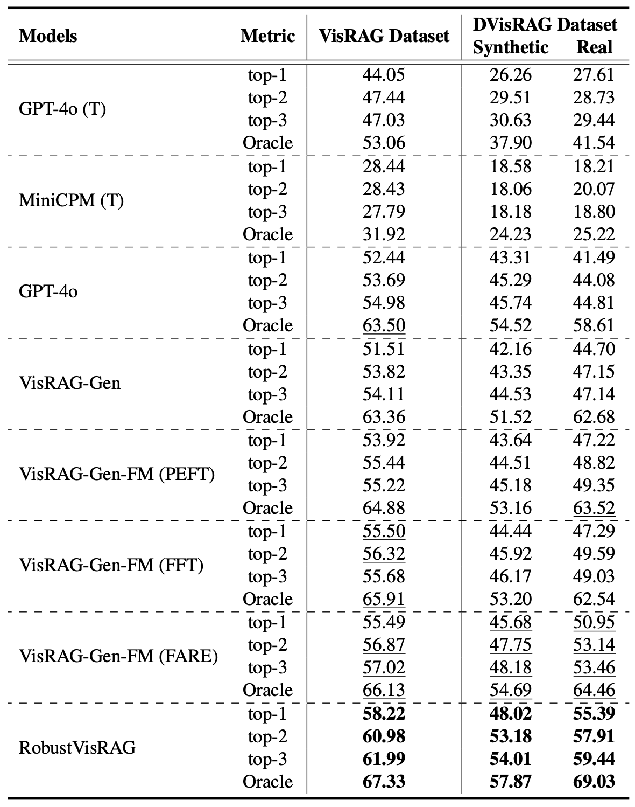

RobustVisRAG: Causality-Aware Vision-Based Retrieval-Augmented Generation under Visual Degradations.
Abstract
Vision-based Retrieval-Augmented Generation (VisRAG) leverages vision-language models (VLMs) to jointly retrieve relevant visual documents and generate grounded answers based on multimodal evidence. However, existing VisRAG models degrade in performance when visual inputs suffer from distortions such as blur, noise, low light, or shadow, where semantic and degradation factors become entangled within pretrained visual encoders, leading to errors in both retrieval and generation stages.
To address this limitation, we introduce RobustVisRAG, a causality-guided dual-path framework that improves VisRAG robustness while preserving efficiency and zero-shot generalization. RobustVisRAG uses a non-causal path to capture degradation signals through unidirectional attention and a causal path to learn purified semantics guided by these signals. Together with the proposed Non-Causal Distortion Modeling and Causal Semantic Alignment objectives, the framework enforces a clear separation between semantics and degradations, enabling stable retrieval and generation under challenging visual conditions. To evaluate robustness under realistic conditions, we introduce the Distortion-VisRAG dataset, a large-scale benchmark containing both synthetic and real-world degraded documents across seven domains, with 12 synthetic and 5 real distortion types that comprehensively reflect practical visual degradations. Experimental results show that RobustVisRAG improves retrieval, generation, and end-to-end performance by 7.35%, 6.35%, and 12.40%, respectively, on real-world degradations, while maintaining comparable accuracy on clean inputs.
Proposed Method

RobustVisRAG enhances Vision-based Retrieval-Augmented Generation (VisRAG) under visual degradations through causality-guided semantic–degradation disentanglement. By explicitly separating degradation and semantic factors inside the vision encoder, our framework suppresses degradation-induced bias while preserving task-relevant representations — without introducing additional inference cost.
Preliminary
Vision-based RAG (VisRAG): Given a textual query \(q\) (e.g., a question or instruction) and a visual corpus \( \mathcal{V} = \{ X_i \}_{i=1}^{N} \), VisRAG retrieves the top-\(k\) most relevant document images and generates a response as follows: \[ \underbrace{R}_{\text{top-}k\ \text{retrieved doc images}} = \mathcal{R}\!\big(q,\; \mathcal{E}_r(\mathcal{V})\big) \qquad Y = \mathcal{G}\!\big(q,\; \mathcal{E}_g(R)\big) \] where \( X_i \) denotes the \(i\)-th document image in the corpus, \( \mathcal{E}_r \) and \( \mathcal{E}_g \) represent the retrieval and generation encoders, and \( \mathcal{R}(\cdot) \) and \( \mathcal{G}(\cdot) \) denote the retrieval and generation modules, respectively. Under visual degradations, corrupted representations lead to unstable retrieval and generation.
Structural Causal Model (SCM): We model semantic content \( S \) and degradation \( D \) as independent causes of the observed image \( X \). In standard encoders, both factors are entangled after conditioning on \( X \), leading to degradation leakage in downstream predictions \( A \). The overall causal structure can be summarized as: \[ S \rightarrow X \leftarrow D, \qquad X \rightarrow Z \rightarrow A \] Our goal is to block the non-causal path: \[ D \rightarrow X \rightarrow Z \rightarrow A, \] while preserving the causal path: \[ S \rightarrow X \rightarrow Z \rightarrow A \]
RobustVisRAG
Non-Causal Path We introduce a dedicated non-causal token to aggregate degradation signals via unidirectional attention, producing a degradation representation: \( Z_{zeg} \) Patch tokens do not attend back to this token, preventing degradation leakage into semantic representations.
Non-Causal Distortion Modeling (NCDM): To structure the degradation subspace, we apply a triplet contrastive objective: \[ \mathcal{L}_{\text{NCDM}} = \max\big(0,\; \|Z^a_{\text{deg}} - Z^p_{\text{deg}}\|_2^2 - \|Z^a_{\text{deg}} - Z^n_{\text{deg}}\|_2^2 + \delta \big), \] This enforces clustering of identical distortion types while separating different degradations.
Causal Path The causal branch aggregates patch tokens bidirectionally to produce purified semantic embeddings: \( Z_{sem} \) This path is isolated from degradation tokens and is the only representation used at inference.
Causal Semantic Alignment (CSA): To ensure degradation-invariant semantics, we aligns degraded semantic embeddings with their clean counterparts while enforcing independence between semantic and degradation representations.: \[ \begin{aligned} \mathcal{L}_{\text{CSA}} &= \frac{1}{T} \sum_{i=1}^{T} \Big[(1 - \langle Z_{\text{sem},i}^{\text{deg}}, Z_{\text{sem},i}^{\text{clean}} \rangle) + \big|\langle Z_{\text{sem},i}^{\text{deg}}, Z_{\text{deg}}^{\text{deg}} \rangle\big|\Big] \\ &\quad + \frac{1}{T} \sum_{i=1}^{T} \big\| Z_{\text{sem},i}^{\text{deg}} - Z_{\text{sem},i}^{\text{clean}} \big\|_2^2. \end{aligned} \] CSA enforces semantic consistency while discouraging degradation contamination.
Distortion-VisRAG Dataset

Distortion-VisRAG (DVisRAG) extends VisRAG with large-scale synthetic and real-world degradations to systematically evaluate robustness in vision-based RAG systems. The benchmark contains 367,608 Q–D pairs across seven document domains, including 12 synthetic distortion types (five severity levels) and 5 real-world recapture conditions.
Retrieval Results
RobustVisRAG consistently improves retrieval accuracy under both synthetic and real-world degradations, demonstrating strong distortion-invariant semantic representation.
Generation Results
RobustVisRAG significantly improves answer accuracy under visual degradations by preserving clean semantic representations for generation.
Quantitative Results
We evaluate RobustVisRAG across retrieval, generation, and end-to-end settings under clean, synthetic, and real-world degradations. Our method consistently improves robustness without additional inference cost.



BibTeX
@misc{chen2026robustvisragcausalityawarevisionbasedretrievalaugmented,
title={RobustVisRAG: Causality-Aware Vision-Based Retrieval-Augmented Generation under Visual Degradations},
author={I-Hsiang Chen and Yu-Wei Liu and Tse-Yu Wu and Yu-Chien Chiang and Jen-Chien Yang and Wei-Ting Chen},
year={2026},
eprint={2602.22013},
archivePrefix={arXiv},
primaryClass={cs.CV},
url={https://arxiv.org/abs/2602.22013},
}